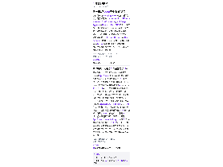
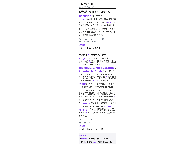
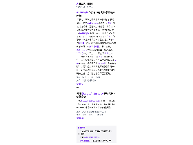
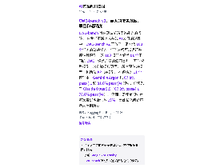
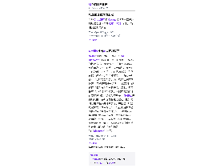
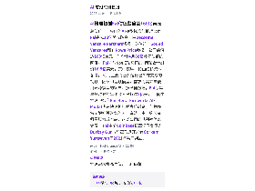

每天高频班次的 AI 领域要闻速览：发生了什么，为什么重要。

缩略图加载失败，点此查看海报
缩略图加载失败，点此查看海报
缩略图加载失败，点此查看海报
缩略图加载失败，点此查看海报
缩略图加载失败，点此查看海报
缩略图加载失败，点此查看海报总部位于旧金山的AI模型托管与推理公司Fal完成13亿美元融资，由Bessemer Venture Partners领投，英伟达、Sound Ventures和T. Rowe Price参投，公司估值达160亿美元，为今年4月80亿美元估值的两倍。 Fal同时公布E轮与F轮，两轮合计融资16.5亿美元，其中较早一轮由红杉资本领投。 公司主要托管并运行已训练完成的视频、图像和音频模型，需求尤其来自使用开源模型的客户；据彭博报道，Fal今年早些时候的年化收入已超过8亿美元。 同类推理服务商Baseten、Fireworks AI和Modal也在快速扩张并高价融资，但据多名了解相关财务的人士说法，由于购买或租赁算力成本高，这类公司的毛利率仍然偏薄。 Fal由前Coinbase机器学习负责人Burkay Gur与前亚马逊开发者Gorkem Yurtseven于2021年共同创立。
依据：可提取原文正文 · 可提取正文；不含交互图表、图片或付费隐藏内容
TechCrunch AI03:34原文链接 ↗
Netflix于周二宣布上线新的“AI Discover”标签页，用户可在其中尝试新的找片方式。 该标签页下的首个实验功能允许用户按当下心情、观看偏好、可用时长以及新片与热门内容来挑选主题，主题包括“轻松一点”“吓吓我”“家庭电影夜”“快速观看”等，选定后即给出匹配推荐。 用户还可进一步缩小主题范围，或选择“换个方向”重新开始；每个片名旁设有“调整推荐”按钮，可保存喜欢的推荐或排除不想再被推荐的片子。 Netflix称该功能由一套新建的智能层驱动，能实时响应用户输入并持续学习，并把这一标签页定位为“试验厨房”，先在小范围试功能再决定是否并入主体验。 该功能目前在美国面向使用英文界面、受支持的电视设备用户开始推送，未来数周将扩大范围；有权限的用户会在电视顶部导航栏看到带红色宝石图标和“新”标签的“Discover”按钮。
依据：可提取原文正文 · 可提取正文；不含交互图表、图片或付费隐藏内容
TechCrunch AI02:42原文链接 ↗
主要人工智能实验室的财务状况存在很多谜团，随着 Anthropic 逐步走向 IPO，我们开始得到一些答案。 特别是，该公司终于披露了更多有关计算经济学的信息，以及 Anthropic 飙升的收入中有多少被计算成本损失了。 该文件是上周发布的 S-1 的更新，但该文件的财务披露仅涵盖今年 6 月 30 日，新数据将披露结果延长到一个额外的季度，即 9 月 30 日。 总体而言，Anthropic 的季度表现不错：收入达到 170 亿美元，高于上一季度的 115 亿美元，表明持续增长。 自 2025 年初以来，它一直在稳步增长，上个季度达到略高于 2 倍的峰值，然后回落至 1.72 倍 许多迹象表明，计算利润的这种变化更多的是昙花一现，而不是长期问题，但它仍然告诉我们有关运营大型实验室业务的重要信息。
依据：可提取原文正文 · 可提取正文；不含交互图表、图片或付费隐藏内容
TechCrunch AI01:07原文链接 ↗原文/简介摘译（非模型综合）
了解 Google Antigravity 和我们的化学信息学技能如何加速药物发现工作流程、搜索化合物并提出新型刚性大环化合物。
依据：订阅简介（原文未读取） · 原文不可用：未提取到可信文章正文（结构变化或仅简介）；仅依据订阅简介，信息可能不完整
Google DeepMind Blog01:01原文链接 ↗原文/简介摘译（非模型综合）
Hugging Face 博客介绍了一个名为 Palette 的项目，目标是用小模型按用户自身的设计语言来生成演示文稿（decks）。 目前可获取的仅是订阅简介，缺少正文与选段，因此模型规模、训练方式、评测结果与可用范围均无法核实。 该条目信息有限，暂不宜据此判断其效果。
依据：订阅简介（原文未读取） · 原文不可用：缺少可信单篇文章元数据或标题，未把列表当正文；仅依据订阅简介，信息可能不完整
Hugging Face Blog00:35原文链接 ↗
Google 于周二宣布，从明年起对 K-12 学生默认关闭 AI 工具，只有学校管理员主动开启后才会启用，涉及 Gemini、NotebookLM、Gemini in Classroom 和 Google Search。 Google 表示，这一调整是在征询学校、教师、研究者和政策制定者意见后作出的。 问题在于 AI 功能已深度整合进搜索：Google 教育副总裁 Chris Phillips 对《纽约时报》表示，“搜索与 AI 已深度融合”，若学校选择完全限制 AI，学生将无法使用搜索，并会看到学校设置的不可用提示。 对学校而言，这构成取舍：教师可能不希望学生用搜索中的 AI 概览完成作业，但仍希望学生能检索资料。 Google 称将在变更生效前数月向学校公布具体细节。 此次调整与 Guided Learning 在学校上线同步宣布，该工具定位类似 AI 导师，强调帮助建立理解而非直接给答案。
依据：可提取原文正文 · 可提取正文；不含交互图表、图片或付费隐藏内容
TechCrunch AI00:30原文链接 ↗
该条目来自 Hugging Face 博客的订阅列表，可见标题为《Same Model, Different Harness: CUGA, Hermes, and Deep Agents — When to Pick CUGA? 》。 由于缺少可信的单篇文章元数据，原文正文与简介均未能获取，目前只有标题可供参考。 仅从标题推测，文章可能讨论在同一底层模型之上，CUGA、Hermes 与 Deep Agents 三种框架或运行环境的差异，以及选择 CUGA 的适用场景；但具体对比维度、测试数据和结论均无法核实。 本条目因此不作进一步推断。
依据：订阅简介（原文未读取） · 原文不可用：缺少可信单篇文章元数据或标题，未把列表当正文；仅依据订阅简介，信息可能不完整
Hugging Face Blog23:57原文链接 ↗
苹果在周一向开发者发布的公告中表示，将调整 App Store 政策，要求所有提供约会或恋爱关系功能的应用标注 18+ 年龄分级，以限制未成年人使用此类应用，以及涉及“性内容或浪漫内容”的 AI 伴侣。 自 11 月 16 日起，开发者须填写新的内容描述项，使应用的年龄分级反映其实际功能。 苹果称，此举延续其此前保护未成年人的措施，包括在全球推出年龄验证技术、增加家长控制与儿童安全功能。 新规可能对 Character.AI、Replika 等主打 AI 伴侣（朋友、恋人、幻想角色）的应用影响更大，这类产品用户偏年轻；xAI 去年也推出可解锁 NSFW 内容的 3D 动画 AI 伴侣。 据文章引用数据，截至去年夏天，App Store 与 Google Play 上头部 AI 伴侣应用全球下载量已达 2.2 亿次。 此外，应用若向他人或群组共享用户真实位置，也须在分级中标注；在巴西，提供家庭位置共享的应用可向司法与公共安全部申请官方评级。
依据：可提取原文正文 · 可提取正文；不含交互图表、图片或付费隐藏内容
TechCrunch AI23:38原文链接 ↗
了解 ChatGPT 和 Codex 如何帮助工程师加速物理世界中的 CAD、PCB 设计、仿真和其他工作流程。
依据：订阅简介（原文未读取） · 原文不可用：原文HTTP 403；仅依据订阅简介，信息可能不完整
OpenAI Blog20:00原文链接 ↗原文/简介摘译（非模型综合）
CWE-bench 旨在测试前沿网络能力的极限。 在我们不断追求共线 AI 发展的过程中，CWE-bench v2 开放了一组包含 100 个任务的公共任务，任何人都可以运行并评估其模型。 这 100 项任务涵盖 91 个不同的 CWE，涵盖广泛的漏洞类别。 开放权重模型，来自数据集页面： 所有评估的模型，包括仅 API 的模型： 在评估的 11 个模型中，Gemini 4 Argon 以 67.8% pass@1 和 81.0% pass@4 领先，仅领先于 Claude Opus 5.5（67.3% pass@1、78.0% pass@4）。 然而，即使是领先者每次尝试也会失败 19%，因此长尾问题还远未得到解决。
依据：可提取原文正文 · 可提取正文；不含交互图表、图片或付费隐藏内容
Hugging Face Blog08:00原文链接 ↗原文/简介摘译（非模型综合）